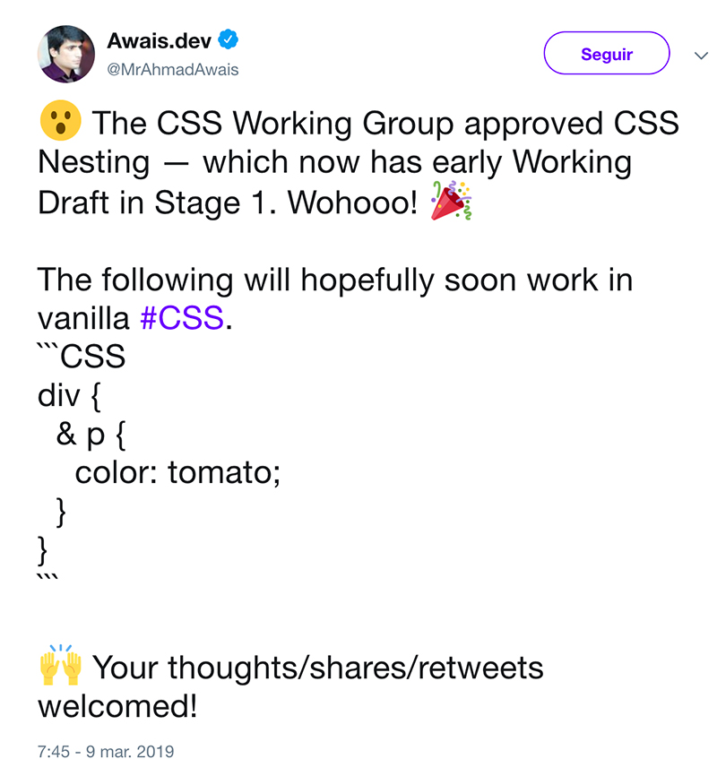

Usé Custom Properties
y no te creerás lo que ocurrió a continuación
Thanks for coming to my TED Talk.
Di una charla de 20 minutos
sobre dos líneas de código
(gracias a este ingenioso truco)
Las llamadas “variables de CSS” ya están bien soportadas en los navegadores modernos.
Bueno, pero… ya tenemos Sass, ¿no?
¿Es demasiado tarde para las variables CSS?
No.
Ventajas de las variables nativas
- Se pueden cambiar dinámicamente
- Responden al contexto del DOM
- Pueden ser leídas y cambiadas por JS
Un apunte…
Técnicamente, la primera variable de CSS
es currentColor.
body { color: #444; }
p { color: currentColor; }
.ejemplo {
box-shadow: 2px 2px 3px currentColor;
background-image: linear-gradient(currentColor, transparent);
}theblog.adobe.com/extending-the-color-cascade-with-the-css-currentcolor-variable
Sintaxis
Las custom properties solo son propiedades.
/*No puedes declararlas fuera de las {…} */
--screen-M: 600px;
/* Y tampoco las puedes usar como media queries */
@media(min-width: var(--screen-M)) {
.ejemplo {
width: 50%;
}
}Nice try.
Se pueden declarar una como valor de otra.
:root{
--primario: lightblue;
--sizeh1: 30px;
}
.principal {
--fontColor: var(--primario);
--fontSize: var(--sizeh1);
}
Pero no se pueden hacer dependencias recursivas.
html {
--foo: var(--bar);
--bar: var(--foo);
}Cómo tener a Javier entretenido durante media hora.
Se puede establecer un valor de fallback.
.ejemplo {
font-size: var(--mainSize, 16px);
}Este valor se utilizará si la variable no está definida.
Y por supuesto, este fallback puede ser otra variable.
.ejemplo {
font-size: var(--mainSize, var(--sizeh1, 16px));
}Y el fallback de la variable de fallback podría ser otra variable y…
No podemos combinar directamente una variable con una unidad.
.foo {
--spacer: 20;
margin-bottom: var(--spacer)px);
}No funciona porque añade un espacio entre la cifra y la unidad.
Pero se puede combinar con un calc()
.foo {
--spacer: 20;
margin-bottom: calc(var(--spacer) * 1px);
}+"px" no funcionaría por que también añade un espacio.
Casos de uso: CSS y SVG
Pueden ayudar a simplificar el código
.alert {
--theme: #ccc;
--darkTheme: #777;
--icon: '';
background: var(--theme);
border: 1px solid var(--darkTheme);
&:before {
background-image: var(--icon);
}
}
.alert--success {
--theme: #f0f9ef;
--darkTheme: #7ebb7a;
--icon: url(../img/success.svg);
}:root:lang(en) {--external-link: "external link";}
:root:lang(es) {--external-link: "enlace externo";}
a[href^="http"]::after {content: " (" var(--external-link) ")"}
Otro ejemplo práctico, en el que hacemos depender el contenido generado de una variable.
Esta charla no va de CSS Grid, pero Grid es ❤️
Custom Properties, SVG y :hover por Michael Gehrmann
Casos de uso: JS
Cambiar Custom Properties con JS
element.style.setProperty('--color', 'red');Unicorn trail, por Louis Hoebregts
¿Cuándo usarlas?
“If It Changes, It’s A Variable”
smashingmagazine.com/2018/05/css-custom-properties-strategy-guide
Performance
- Las variables se heredan y un cambio de valor en un nodo puede afectar a los descendientes
- calc() funciona bien con las variables, pero obviamente ralentiza ligeramente los cálculos
- Si cambiamos variables con JS, es preferible usar setProperty que directamente un style inline
- Las Custom Properties pueden ser una herramienta más eficiente que otras para efectos de scroll
Más información: blog.jiayihu.net/css-custom-properties-performance-in-2018
Recursos adicionales
Post de introducción en Smashing Magazine:
smashingmagazine.com/2017/04/start-using-css-custom-properties
Ejemplo de retícula flexbox con Custom Properties:
googlechrome.github.io/samples/css-custom-properties
Jesús Olazagoitia en FrontFest 2019:
youtube.com/watch?v=NroY5YLLcVY
Conclusiones
-
Las Custom Properties abren la puerta a cambios fuertes en la arquitectura de la CSS.
-
El layout y la forma en que que hacemos adaptaciones responsive va a cambiar radicalmente.
-
Bien usadas, pueden ser una gran mejora de performance en muchos casos actuales.
-
El preprocesado de CSS no va a desparacer, pero se transformará.
One more thing…
Bueno, pero… ya tenemos Sass, ¿no?
¡Muchas gracias!
¿Preguntas?
Presentación: bit.ly/slidesFSV